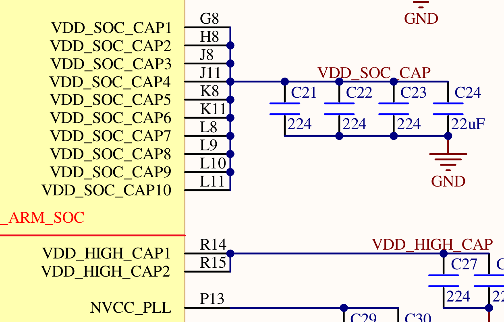

去耦与 PDN：目标阻抗、谐振、224 阵列
「每个电源脚配一颗 100nF」是口诀，不是设计。为什么是 100nF 而不是 1µF？为什么本板用 224（0.22µF）？并联会不会反谐振？这一章把 PDN 当成一个阻抗问题来算，最后落到本板 CORE 第 2/3 页那 30 多颗电容的真实排布。

读完这一章，你应该能
- 用 Z=ΔV/ΔI 算出本板 1.35V 域的目标阻抗
- 画出单个电容的 |Z|–f 曲线，说出 ESR 平台与 ESL 上升段
- 解释 0402/0.22µF 的自谐振频率，以及为什么高频段只认「小容值」
- 识别两种容值并联后的反谐振峰，知道怎么用 ESR 或磁珠压下去
- 算安装电感（走线 + 过孔），判断「电容放得远」等于没放
- 看懂本板 17×224 + 2×22µF 的排布逻辑
4.4.1为什么要去耦：电流不是从电源来的
SoC 内核在 1ns 内从 0.3A 跳到 1.0A，di/dt = 700A/µs。即使电源平面阻抗只有 10mΩ，也会产生 7mV 跌落；而真正的限制是电感：从 DCDC 输出到芯片的路径有 10nH，ΔV = L·di/dt = 10n×0.7A/ns = 7V——完全不可能。
所以高频电流必须由芯片附近的电容提供：电容在 ns 级时间内放电，把 di/dt 的路径长度缩到毫米级。去耦电容不是「滤波」，是「本地电池」。
4.4.2目标阻抗：唯一的设计指标
Ztarget = ΔVallowed/ΔIstep
本板 1.35V 域允许 ±5%（67.5mV），最坏阶跃 1A ⇒ Ztarget = 67.5 mΩ。这个阻抗必须在整个关注频段（通常 1kHz–100MHz）都低于目标。
3.3V 域允许 ±5%（165mV），阶跃 0.5A ⇒ Ztarget=330 mΩ，宽松得多。这就是为什么 3.3V 域的电容排布没那么讲究。
注意：Ztarget 是频域指标。要在全频段压住，只能靠「电容 + 平面 + 封装」三级协同。
4.4.3单颗电容的 |Z|–f 曲线
真实电容是 C + ESR + ESL 串联：
Z(f) = ESR + j(2πfL − 1/(2πfC))
三个特征点：
- 低频段：|Z|≈1/(2πfC)，随频率下降（容性）
- 自谐振 f0=1/(2π√(LC))：|Z| 最小，等于 ESR
- 高频段：|Z|≈2πfL，随频率上升（感性，电容「失效」）
算几颗本板实际用的：
| 封装/容值 | C | ESL | f0 | ESR | 高频失效点 |
|---|---|---|---|---|---|
| 0402 100nF | 0.1µF | 0.5nH | 22.5MHz | 30mΩ | >50MHz |
| 0402 224 | 0.22µF | 0.5nH | 15.2MHz | 20mΩ | >40MHz |
| 0603 1µF | 1µF | 0.8nH | 5.6MHz | 10mΩ | >20MHz |
| 0805 22µF | 22µF | 1.2nH | 0.98MHz | 3mΩ | >8MHz |
为什么本板用 224 而不是 100nF：224 在同样封装下容值翻倍，低频阻抗更低，自谐振只从 22.5MHz 降到 15MHz，而 DDR/SoC 的主要噪声能量在 1–20MHz（开关电源 + 内核跳变）。用 224 相当于把「有用频段」整体压低阻抗，代价是 40MHz 以上略差——那一段由封装内电容和平面兜底。
反过来，100nF 在高频段并不比 224 好：两者 ESL 相同（同封装），高频都变成电感。真正决定 100MHz 以上的是封装内的硅电容（几分之一个 nH），板级电容无能为力。
4.4.4反谐振：并联不一定更好
把 22µF（ESL 1.2nH）与 224（ESL 0.5nH）并联，会在两者之间出现一个并联谐振峰：
fanti ≈ 1/(2π√(L大·C小)) = 1/(2π√(1.2n×0.22µ)) ≈ 9.8 MHz
在这个频率上，大电容呈感性、小电容呈容性，两者并联反而变成一个「高阻」LC 并联回路，|Z| 可能从 3mΩ 冲到 50mΩ 以上——恰好落在 DDR 时钟与内核噪声频段。
三种压法：
- 靠 ESR 阻尼：把大电容选 ESR 稍大的型号（如 5–10mΩ），Q 值降低，峰变矮。这也是为什么板上不全是「超低 ESR」电容。
- 多值分散：不要 22µF + 0.22µF 两档硬拼，中间补 1µF/4.7µF，让峰彼此错开、互相填平。
- 磁珠隔离：在不同域之间串磁珠（本板 L3 220R、L4 120R 用在网口电源），把谐振「关」在局部。
本板 DDR 域用「17 颗 224 + 2 颗 22µF」，就是把 224 铺满、只用少量 22µF 打底，峰值靠数量与 ESR 压住。
4.4.5安装电感：放远了等于没放
电容的 ESL 由封装决定，但回路电感由布局决定。经验值：
| 路径 | 电感 |
|---|---|
| 1mm 宽 0.2mm 厚走线，1mm 长 | 约 1nH |
| 0.3mm 过孔（板厚 1.6mm） | 约 0.5–0.8nH |
| 电容到电源脚 5mm 走线 | 约 5nH |
5nH 在 100MHz 时阻抗 = 2π×100M×5n = 3.1Ω，比电容本身高两个数量级——这颗电容等于没装。
规则：去耦电容到电源脚的总回路电感 ≤ 1nH，即走线 ≤1mm、过孔 ≤1 个，且电源与地过孔成对放置（电流一进一出，互感抵消）。本板 CORE 的 224 都紧贴 BGA 焊盘，就是这个道理。
4.4.6本板 PDN 三层结构
| 层级 | 元件 | 负责频段 |
|---|---|---|
| 第一层 | DCDC 输出 22µF/470µF | 1kHz–1MHz，储能与环路稳定 |
| 第二层 | 板级 224/1µF 阵列 | 1–50MHz，本地瞬态 |
| 第三层 | 封装内电容 + 电源/地平面 | 50MHz–1GHz |
平面为什么重要：两层铜（间距 0.1mm）构成的平板电容 C = ε·A/d，10cm² 面积约 1nF，且 ESL 极低。它是 100MHz 以上唯一的「低阻抗通路」。所以叠层设计（第五篇）会专门讲「电源地平面紧邻」。